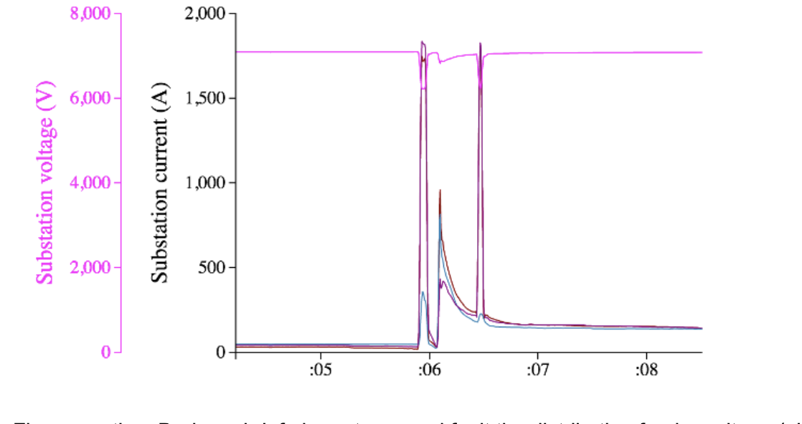
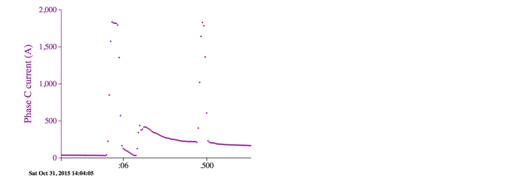

Fire season is just around the corner¶
Sascha von Meier 2020-07-29
Dry grass, wind, and high voltage are a dangerous combination, as many people and utilities are painfully aware.
Even with the best vegetation management efforts, all it takes is a single errant tree branch to draw an electric arc with an uninsulated line, and a tiny ember to ignite the fuel below.
Small, high-impedance arc faults from momentary contacts with plants or animals can have catastrophic consequences under certain conditions – but the reality is that these are not at all uncommon events. Most of the time, they are harmless (well, except for the plants or animals involved) and go completely unnoticed, because the fault currents are too small to cause fuses or circuit breakers to engage.
Likewise, small arcs can result from wear and tear on electrical equipment, and recur many times over before the one unfortunate day they spark a fire.
One line of defense is regular visual inspection by utility workers or drones, looking for any sign of damage on the high-voltage equipment, or any branch that might have been missed by tree trimming crews.
Another approach, and one that may turn out to be more efficient and reliable, is to look for signs of problems in high-resolution electrical measurements.
In the past, this has been difficult to do: dangerous electric arcs last only a small fraction of a second, so the voltage or current sensors that pick them up must sample very frequently, and their output must be continually monitored.
For example, the data in the illustration shows current measurements from micro-PMUs streamed at 120 data frames per second (twice per cycle), where each dot represents a data frame. The recurring fault – which was later found to be caused by a palm frond too close to a distribution line – lasted only a few cycles each time. During each fault, there is a rise in current, accompanied by a momentary voltage sag.
Conventional SCADA measurements that report voltage or current once every few seconds could never capture such an event.
Running analytics on high-resolution streaming data – as described in the blog post “Voltage Sag Safari” – can provide real-time monitoring tools for detecting these events in an automated manner. Using AI to identify signs of repetitive faults present in streaming sensor data can allow for early detection giving grid operators enough time to remedy the situation before fires can occur.

During a brief phase-to-ground fault the distribution feeder voltage (pink), nominally 7.4kV, momentarily dips by a few hundred volts. Such an event is barely noticeable for most utility customers.

The same event, zoomed in on the phase current that is making vegetation contact. Each dot is a data frame for a half-cycle at 60 Hz, so each arc has a duration of 0.1 second or less.